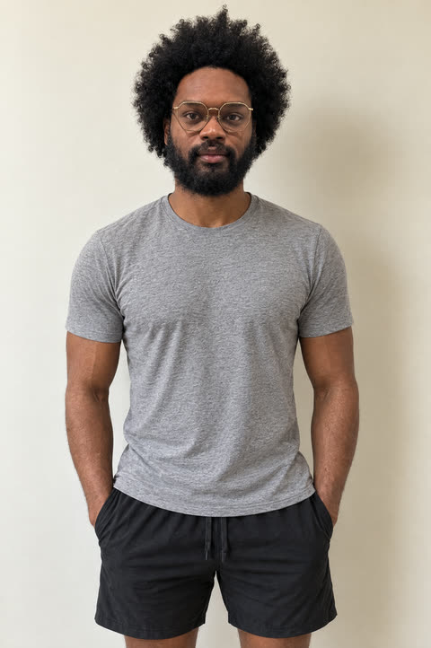
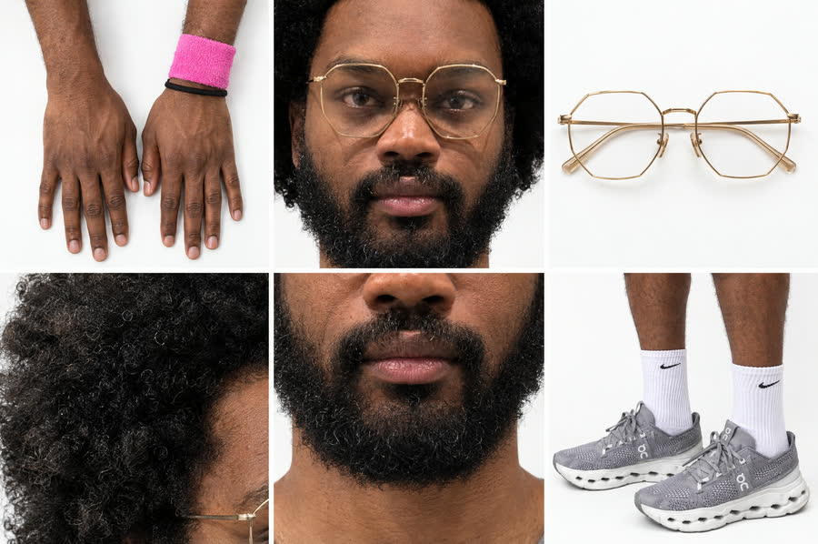
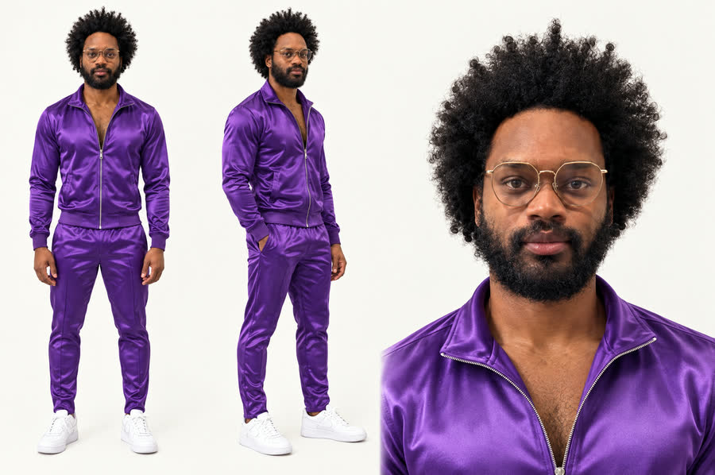
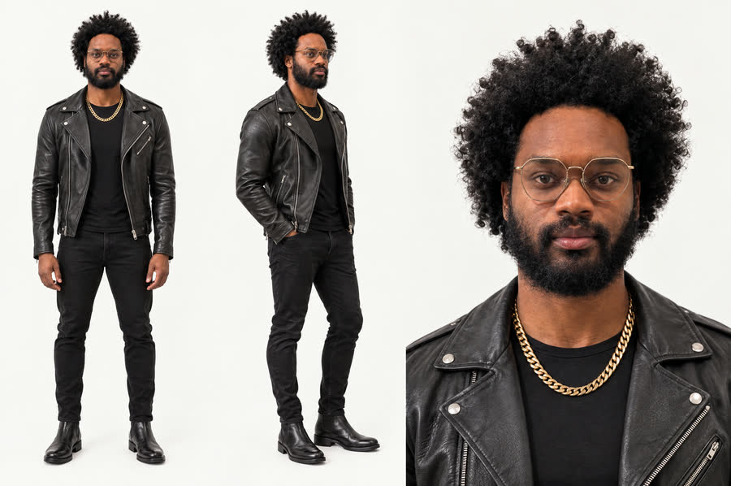
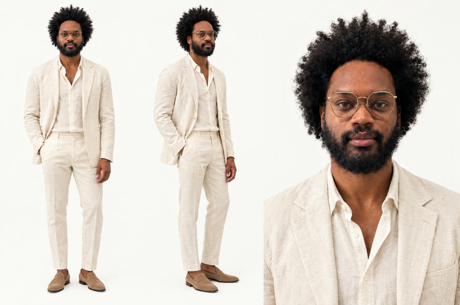

DÆMN · a visual + audio mix
AI Slop.
“Life is a game, a loop, you define yourself.”
to Gotts Street Park — Lost & Found


Frames from the piece
Every scene, in order.
One still per scene, straight from the final cut. Scroll sideways.


The making of · 01 · The personas
Six of me, a few frames each.
Iconic photos, re-made with me in them from real photos of me — then animated. Each one flashes on a kick. Times are on the video's clock.
The making of · 02 · Motion control
Same move, any outfit.
My real clip drives the AI: it copies every movement, frame for frame, in whatever I'm wearing.
One real frame, seven outfits.


The making of · 03 · The character sheets
Locking my face.
One identity, rebuilt from a real September selfie, so every AI shot is the same man. Every item he wears is locked to one real version: one pair of glasses, one pair of shoes, the band on the left wrist.

The identity — big afro, full beard
turnaround, angles, details, light, colour





The character bible
every item he wears, locked to one real version and built in 3D · drag any of them
The looks
every outfit made from the same identity






The making of · 04 · The objects
Ride the carousel.
Every object in the piece, built in 3D and seated on one carousel. Drag to spin it.
Koi — swims through the iris
Every object, on its own.
rendered with the same lifelike finish as the video · drag any of them
The making of · 05 · The edit
Every layer, on one clock.
The 42.3 seconds as they are built: the picture, each layer stacked on top of it, and, frame by frame, how the picture is treated and how everything moves. The speed line drops below zero where a shot runs backwards. Play the video and the line runs across; tap anywhere to jump there.
0:00.0
- Real footage
- AI video
- 3D
- Screen recording
- Outfit swap
- Persona flash
- 3D object · dot = it hits the lens
- Camera move · diamond = turn at the cut
Loading the edit map…
Scroll sideways along the map · hold a block for its detail on desktop
The making of · 06 · The sound
Twelve bars, taken apart.
The loop is 12 bars of the song, split into stems and re-cut on the bar lines. The shaded bars are the remix.
Loading the stem map…
Press play on the piece and a playhead runs across it · scroll sideways on a phone
- Bars 5–6 · double timethe music plays two bars in the space of one
- Bar 7 · spacethe music drops out; drums and voice carry it
- Bar 8 · reversed swella bar played backwards, rising in
- Bar 9 · the breakthe kick drops out
- Bar 10 · drums returnthe kick comes back in
The stems.
The making of · 07 · How it was made
Footage in, a loop out.
- Real footagePhone clips from the trip — the base of every shot.
- TrackingEach clip's camera move is tracked so 3D can sit inside it.
- 3D objectsBuilt in Blender with lifelike materials.
- AI shotsGPT Image 2.5 stills, Seedance 2.5 motion, Genjutsu motion transfer.
- The editCut on the kicks, turns around the subject, jump cuts.
- The song12 bars split into stems and remixed into a loop.
Credits
- Made by
- DÆMN
- Music
- Gotts Street Park — Lost & Found
- Footage
- Shot on a phone, Thailand and Laos, 2026
- AI
- GPT Image 2.5 · Seedance 2.5 · Higgsfield Genjutsu
- 3D
- Blender · three.js · light map from Poly Haven (CC0)
- Sound
- Demucs stem split · Rubber Band time-stretch